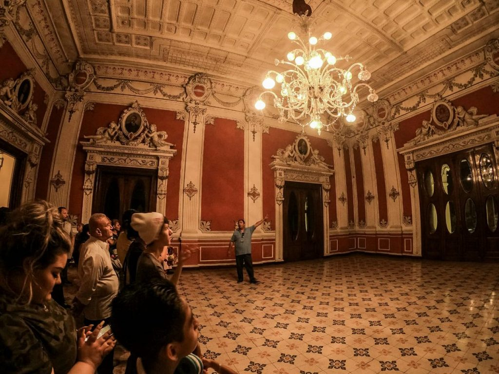
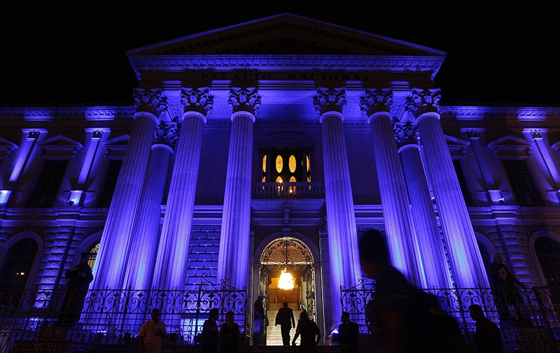
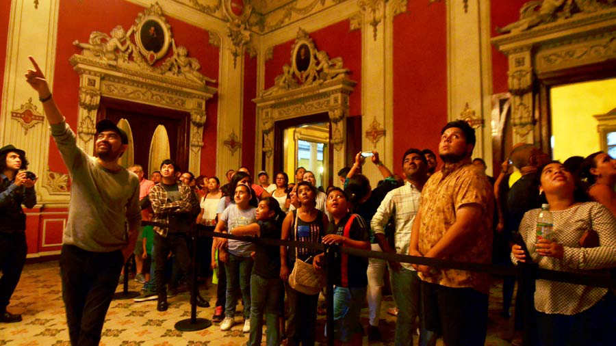

Con estos recorridos nocturnos por el Palacio Nacional, en San Salvador, se busca impulsar el turismo en la capital y además educar sobre historia, arte y pintura del país a nacionales y extranjeros. Las personas que ya vivieron la experiencia disfrutan de coloridas luces, personajes míticos, música, malabaristas, danza folclórica y contemporánea, entre otras actividades.
Fueron recibidos al menos 700 turistas nacionales y extranjeros como el atractivo principal del Segundo tour turístico al Centro Histórico de San Salvador.Los asistentes fueron distribuidos en grupos que son guiados por las instalaciones del Palacio por una persona que indica cada uno de los recorridos que están enfocados a educar sobre la historia del Centro Histórico enmarcado como una pieza importante del Bicentenario.
|  |  |  |
Si quieres informacion acerca del lugar y registrarte a una de nuestros recorridos, usa el enlace de abajo para registrate.
Nosotros nos pondremos en contacto contigo!
-------->Reserva tu cupo <--------